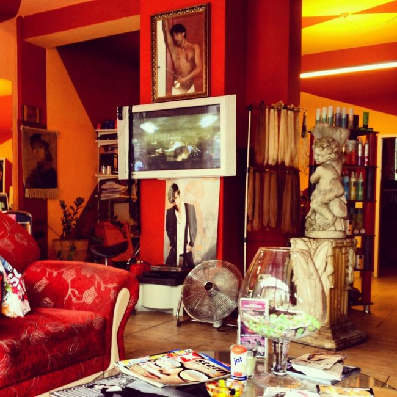

Interview: Hamid, Stardom, and the Difference Threshold

Christmas Greetings from Hamid!
It’s November of last year and Kelly and I are visiting relatives of mine in Soest, a small town of under 50,000 in Northwestern Germany. We’re hanging out in the kitchen, chatting over a cup of coffee, when one of my cousin’s friends walks in. He pauses with one arm holding open the door, staring at us like a deer in headlights. Before we have the chance to say Hallo he’s turned and raced up the stairs to my cousin’s room. Teenage boys, we initially chuckled, thinking perhaps he had been surprised to find two random ladies in his friend’s kitchen. A couple hours later Kelly comes to the more probable conclusion: he was surprised to find two random foreigners speaking English in his friend’s kitchen.
Of course this kid had encountered English before, but most likely in the classroom, in books, on TV, and maybe even on a trip abroad. In the space of his friend’s home, we were completely out-of-context and foreign. It wasn’t the shock of his life, but it was a little more “difference” than he was used to.

The English Speaking Foreigners in Soest, November 2012
For those of us who live in diverse and international metropolises like Berlin, our “difference” thresholds tend to be higher. We encounter “different” and “foreign” most days and in many forms: people, foods, music, smells, attire, houses of worship, celebrations, even neighborhoods. A few words in a foreign language doesn’t usually startle us, but that doesn’t mean we don’t have difference thresholds of our own.
My “foreign language in the kitchen” equivalent was a hair salon in Charlottenburg.
For months I drove by Salon Hamid Nosrati on the bus or my bike en route to the office, straining my neck to observe a man prance around to blaring music as he chopped and trimmed, or sprawled out on a lounge chair outside the shop, praying to the sun gods (this is Burton family speak and means tanning, not actual praying), all while wearing bejeweled short shorts and crop tops. Hamid was eccentric, theatrical, and deliciously fun to watch. But his “difference” factor was a tick or two higher than I was used to – plus my hair was at stake – so I resigned myself to a spectator role and continued making appointments at my run-of-the-mill, cappuccino-serving, music-free salon instead.
It took about half a year, a few internal pep talks, and some online review reading before I finally summoned up the courage to make my first appointment. As soon as I walked in, Hamid greeted me with a broad smile, cheek kisses, and the familiar du. I was waved over to the ornate red couch to wait my turn and quickly gave up on the magazines to take in the sensory overload that would leave my head spinning and my foot tapping: Persian music blaring from the speakers, Brandy music videos from my middle school days playing on silent, gaudy statues of cherubs, seductive posters of Hamid, and of course the real deal right in front of me: adeptly shaving a teenage boy’s head while vigorously shaking his hips to the beat.

My passion is dance, Hamid shares the obvious with me later while confidently snipping away at my bangs. And hair styling of course, too, he adds, chuckling, dancing and hair styling, just like my mother. He does a little spin and grabs the hairspray. I ask him if he grew up in Germany. He tells me his family immigrated to Berlin from Iran many years ago, he spent four years in Palma de Mallorca at some point, went to cosmetology school in Berlin, but doesn’t want to discuss exact dates. He also makes it very clear he won’t discuss politics.
“How do you identify yourself? As Persian, German, both?” I ask, trying to focus on his story.
When people ask I say Iran is my home… I’m from there, I am Persian. But Berlin is my home, too. I love Germany, it’s a nice, rich country. And I love Berlin, it’s a pulsating, vibrant city… very Multikulti. I’ve seen it change a lot over the years… I was here before and after the Wall. I used to get a visa to go to the east on the weekends.
“What does Multikulti mean for you?”
Different people from different countries and cultures, living together, he replies simply, looking outside, swooping his arms, potentially demonstrating the space in which they do that.
“Does your salon tend to be Multikulti? In terms of your clients and employees?” I ask, thinking about his assistant who asked me if I was Turkish while he blow-dried my hair, then leaned in and giggled, adding because Germans don’t have this much hair.
Yes, many of my clients and employees have a Migrationshintergrund, but everyone is welcome here, Hamid emphasizes. His sister works part-time in the salon and his main assistant, Ali, is Turkish-Yugoslavian. Another Persian woman who didn’t speak any German was a newer employee. All the Persians in Berlin know me, Hamid acknowledges. But my clientele is very mixed.
{kind=link}
Hamid with Kader Loth
Hamid brands himself as a “Star Friseur” (Star Hairstylist), in a sense bridging his dancing and hair styling passions. His clients range from kids from the neighborhood to Kader Loth, a famous Turkish-German photography model. Taped to his front window is a photo of him with Berlin’s mayor, Klaus Wowereit. Yet when asked what “Star Friseur” means to him, Hamid was more concentrated on the process than the person: We’re all stars. It’s about wanting to feel like one more than actually being one. Again he emphasizes: Everyone is equal to us here.
Hamid’s philosophy on integration is strikingly similar to his philosophy on hair: Integration is personal, it comes from the individual and from inside. You have to make yourself welcome, not just expect others to do it for you.
“But how does one do that?”
You have to be yourself and be proud of who you are. I am who I am: I have my passions and live my life the way I want. I love everyone else even if they don’t love me back. (I think of all the strange looks I’ve seen Hamid elicit from old ladies on the bus). Some people hate the Germans, but I just tell them the best way to overcome that is to just love them back anyway. They get confused by that, he laughs.
By the end of our chat Hamid has taken my number and invited me to go dancing with him sometime. Keeping up with him won’t be easy, but it shouldn’t matter much. After all, we’re all stars to Hamid.
– By Sophia Burton
Salon Hamid Nosrati is on Facebook and located at Kantstraße 69, 10627 Berlin, Germany.
All photos not sourced are either mine or from Salon Hamid’s Facebook page.
I need to ask, only because I badly need a stylist that won’t break the bank. How did you like your hair cut? Haha!
Ha, great question! The answer is yes, Hamid does a great job and it’s very reasonably priced.
delicious read, soph. lets go dancing with hamid!!